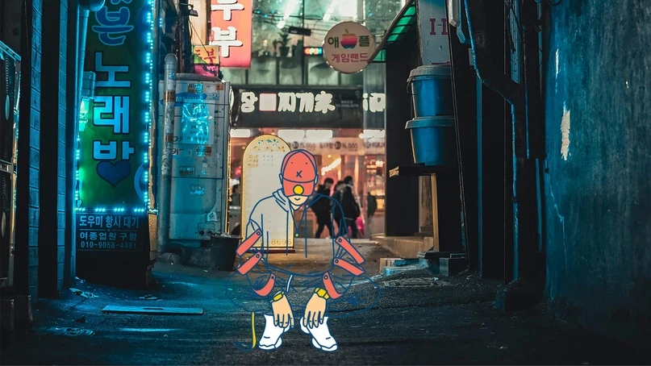

Александр Сорге — о том, почему из виртуальных селебрити получатся идеальные политики
На экранах кинотеатров по всему миру снова красуется очередной реанимированный Франкенштейн с Голливудских холмов — возмутительно неполиткорректный ремейк «Аладдина», где почти белый и совершенно точно цисгендерный гетеросексуальный самец угнетает синечернокожего джина! Между тем, эксплуатация духов — не сказка, а вполне себе наша реальность. Голографические двойники артистов из загробного мира уже скачут по сцене, а модное тряпье рекламируют модели, которые существуют исключительно в цифровом виде.
Все эти киберпризраки приносят огромное количество бабла, верно служа своим хозяевам, становясь трендсеттерами, инфлюенсерами и прочими социальными демонами XXI века. И, вполне возможно, что скоро эти демоны будут эксплуатировать уже нас.
Бестелесные призраки
Да, технологии — поистине великая штука. Мировая социалистическая революция захлебнулась пепси-колой и накрылась женской половой щелью. Зато достижения революции цифровой сегодня позволяют продавать даже воздух. Ну или возвращать к жизни давно почивших артистов: в 2010 году на сцене дала концерт голограмма и без того бессмертного Френка Синатры. Через два года вместе со Snoop Dogg’ом и Dr. Dre выступила проекция Тупака Шакура, ну а в 2014-м посмертный концерт дал и Майкл Джексон. Как говорится, «король умер, да здравствует король!». Весной же этого года стало известно, что в мировое турне отправится и голограмма Уитни Хьюстон.
Отечественные продюсеры тоже делают первые робкие шаги в некромантии: в 2012 году на сцену вышел аватар Виктора Робертовича. Естественно, мимо западных трендов не мог пройти и Тимурка Юнусов и таки спел на одной сцене с бестелесным духом Децла, с которым, правда, так и не попрощался в последний раз. Действительно, на похороны-то мертвой звезды билеты не продашь, а вот на концерт с его голограммой — запросто!
Самое забавное, что эта армия мертвых пополняется благодаря технологии, которой уже лет 200. Все эти объемные изображения — действительно всего лишь призраки. Призраки Пеппера: даже не голограммы в классическом смысле этого слова, а отражения, оптические иллюзии. Технология Musion Eyeliner, благодаря которой дохлые селебрити сегодня топчут подмостки, — лишь более усовершенствованная версия этой техники иллюзионизма, и создается обман вовсе без хитрого колдунства или веселых галлюциногенных веществ. Тонкая полупрозрачная пленка натягивается перед сценой под углом в 45 градусов. Проектор же, закрепленный сверху, проецирует изображение на пол перед сценой, прямо под пленку. Свет, отражаясь от специальной поверхности на полу, попадает на пленку, создавая объемное изображение. Сам же «концерт» — не что иное как видео, записанное заранее. Роль звезды играют актеры в зеленых спандексах, на которые потом натягиваются текстуры этой самой звезды.
Примерно так же снимали Таноса для «Мстителей» или Голума из «Властелина колец» — разница с голографическим Тупаком лишь в том, что последнего еще и проецируют на сцену. Но зарабатывать на дохлых артистах — это муторно: нужно согласовать все нюансы с родственниками, угодить армии фанатов, да и вообще делиться прибылью, что для любого продюсера хуже геенны огненной. Гораздо лучше наживаться на тех, кто вообще не существовал в мире реальном.
Девятнадцатилетняя Лил Микела — инстаблогер с 1,6 миллиона подписчиков. Она ходит в кроссовках Raf Simons и пуховиках Moncler, работает с Prada и Louis Vuitton, снимается для глянцевых журналов навроде Paper и Highsnobiety. Микела топит за бодипозитив, права трансгендеров и иммигрантов, словом, идеально вписывается в модный нынче либеральный тренд. И, естественно, как любая духовно богатая блогиня, она пишет музыку. Казалось бы, таких отрыжек Instagram, тычущих в камеру последнего айфона своими размалеванными лицами, сегодня как грязи. Но от них Лил Микела отличается одним-единственным нюансом. Она — не настоящая девушка. Микела — графическая модель, нарисованная неизвестным художником. У нее есть и конкурентка — темнокожая манекенщица Шуду Грэм, созданная фотографом Кэмероном-Джеймсом Уилсоном. Уилсон также создал Чжи и Марго, чтобы отразить все оттенки толерантности.
Модели весом чуть больше пары мегабайт и цифровые селебрити вообще становятся все популярнее. Виртуальная японка Imma, как и ее западные коллеги, снимается для модных издательств. Парнишка Ruby G. путешествует и рассказывает о крутых образовательных программах по всему миру. В Индонезии набирает популярность цифровая певица Thalasya. Немного криповый Polishboy08 ведет свой блог о переезде в Варшаву. Ну а Taylor Effin Cleveland — просто виртуальный фрик, который тусит с другими киберселебами и изредка троллит их.
И все эти представители виртуальной богемы, естественно, приносят своим создателям вполне реальные хрустящие банкноты. По данным Techcrunch, в 2018 году модельное агентство Brud, давшее жизнь Лил Микеле, получило шесть миллионов долларов от американских венчурных фондов. Плюс ко всему, реклама известных брендов в Instagram наверняка приносит немалое количество таких грязных и таких зеленых бумажек. Да и билеты на концерты инкарнаций известных певцов дают далеко не за преданную фанатскую любовь.
Рабство духов
Всt это звучит немного безумно, но по сути ничем не отличается от традиционного шоу-бизнеса. Почившие авторы и артисты всегда работали даже после своих похорон, наполняя карманы нахлебников и бездарных дармоедов. Не говоря уже о продюсерах и издателях, которые даже из гниющей тушки вытрясут последнюю крупицу золотого песка. Тот же Майкл Джексон через пять лет после смерти заработал 700 миллионов долларов.
Сценические образы же подчас с реальностью имеют столько же общего, сколько и восточные сказки с историей Арабского халифата. Тексты Тупака, вокал Синатры или движения Джексона действительно цепляли, но сегодня эпоха живых выступлений уходит в прошлое: весь этот термитник поп-вшей поет своим фанерно-автотюненным голосом однообразные тексты, написанные батраками-гострайтерами, под однообразную музыку, написанную батраками-композиторами. Да и Instagram облик какой-нибудь сисястой дивы не сильно отличается от полностью цифрового изображения.
Разница лишь в том, что вместо жирного продюсера с волосатой грудью и отвратительной рожей бабки гребет очкастый мальчишка-программист.
Шоу-биз вообще сегодня скрещивается с интернетом, и в результате этого отвратительного соития часто получается настолько богомерзкий гомункул, что невольно появляется мысль о святых кострах инквизиции, — гомункул, полностью состоящий из лжи и фальши. Все эти напомаженные рты с белоснежными зубами читают по бумажке или пишут в «своем» аккаунте вещи столь пресные и конъюнктурные, не имеющие ничего общего с их мнением, что от этого коммерческого лицемерия аж тошно становится. Ведь высказывать свое мнение могут только мужичищи, бабищи и трансгендерищи с яйцами, а широкой публике, толстосумам-рекламодателям и алчным продюсерам яйца не н��жны. Им нужна только твоя жопа. Поэтому все эти Instagram-аккаунты всевозможных селебрити и инфлюенсеров рассказывают не о людях, а о точно таких же выдуманных персонажах, как и Лил Микела (кстати, подписывайтесь на Instagram моего аватара). С той лишь разницей, что у мясных селебов есть физическое тулово.
Сетевой ресурс WhoIsHostingThis.com в 2012 году провел среди своих пользователей опрос, результаты которого продемонстрировали, насколько распространена ложь в соцсетях. Люди, например, постили статусы, согласно которым занимались разными веселыми и интересными делами по всему миру, в то время как в действительности они даже не покидали свой дом. Большинство респондентов подтвердили, что они занимаются намеренным искажением информации в Facebook. Исследования показали, что каждый третий участник опроса проявил склонность к патологической эгоцентричности.
— «Только после Вас: Всемирная история хороших манер» Ари Турунен, Маркус Партанен
А теперь представьте, сколько лжи в аккаунтах блогеров. Возведите эту ложь в квадрат, и вы получите шоу-бизнес. Это вполне логично, ведь мы всегда стараемся показать свои достоинства и достижения и скрыть недостатки и неудачи — соцсети лишь предоставляют нам или нашим кумирам удобную возможность. Так что какая на хрен разница, вымышлен твой кумир или реален, если, один черт, с действительностью его жизнь не имеет вообще ничего общего?
Голограммы и виртуальные селебрити вполне могут перерасти из обычного баловства в самый настоящий тренд. Ну а почему нет? С ними гораздо проще работать: они не капризны, не знают усталости и уж точно не захлебнутся собственной блевотиной, перебрав кокаиниума.

Технологии сделают их неотличимыми от обычного человека, а уж диапазон их применения и вовсе поражает воображение. Тут я уже вижу, как загорелись глаза у наших партработников после прочтения этого абзаца (да, меня читают даже в Спортлото, на минуточку): кнопку в думе за тебя нажимал сопартиец, душевную речь писал спичрайтер, законы стряпали цепные юристы, а теперь еще и голограмма за тебя выступать будет! Ну сказка же! А ты пили себе спокойно тендеры, получай жалованье за счет смердов, да трахай Instagram-моделей.
Цифровой мессия
Шутки шутками, но виртуальные инфлюенсеры вполне могут стать грозным оружием в руках политтехнологов. Журнал Time в 2018 году назвал Лил Микелу одной из 25 самых влиятельных людей в интернете. Ее опыт показывает, что люди готовы внимать и боготворить золотого тельца, даже если этого самого тельца в реальности вовсе не существует. Так почему бы не использовать духов для достижения своих грязных политических целей, ведь в виртуальные уста можно вложить все что угодно.
Весь из себя такой либерально-толерантный политик, подставляешь свою задницу иммигрантам во имя торжества социальной справедливости и метишь в президенты? Пожалуйста, создай себе свой виртуальный рупор: например, двухсоткилограммовую темнокожую бодипозитивщицу, которая топит за равенство, братство и вот это вот все. Хотя, погодите-ка, такая уже есть. Создатель Шуду явил миру Брен, которая вполне может стать иконой униженных и оскорбленных, вложи ей в уста правильные слова. Да и сама американо-бразильянка Микела прекрасно подходит на эту роль.
Строишь из себя сторонника ежовых рукавиц, господа нашего Иисуса Христа и секса исключительно в миссионерской позиции? Замути себе ультраконсервативный кусок пикселей! Ой, и такой тоже уже есть. Светловолосая Бермуда топит за Трампа, «гордится своей белой кожей» и постоянно критикует поганую либеральную гниль. Осталось только нацепить на нее маску усатого диктатора или царька-богопомазанника, и любители жестких мозолистых рук государства в своем анусе будут кончать по команде. Как говорится, «у нас есть что-нибудь для каждого».
Но почему бы не сделать еще один шаг? Подумайте сами: зачем создавать виртуального артиста или блогера, говорящего нужные тебе вещи, если можно выйти на новый уровень и создать виртуального политика? Политические игры на публику — суть тот же шоу-бизнес: вон, Зеленский и Рейган не дадут соврать. Шоу, где все строится на образах персонажей, но никак не реальных людей. Ведь чтобы твои умные или не очень речи послушали, нужно завернуть их в блестящую и эффектную обертку. Красавчик Кеннеди одержал победу на президентских выборах во многом благодаря первым теледебатам: на экране харизматичный ирландец с белозубой улыбкой смотрелся гораздо более выигрышно, чем обрюзгший и потеющий Никсон.
Формирует же этот образ целая команда пиарщиков, политтехнологов и спичрайтеров — любой политик, как и любая звезда, лишь петрушка, в заднице у которой рука гораздо более влиятельного человека, а то и не одного. Иногда в этот политический анус удается засунуть свою маленькую ручонку и народу, но это, скорее, исключение. Да и сладкие предвыборные речи точно так же с реальностью не имеют ничего общего – как известно, был только один политик, который выполнил все свои обещания.
Так раз это точно такое же шапито, то зачем лепить кандидата из того, что есть под рукой, если можно начать с чистого листа? Цифровому мессии можно будет вложить в уста любую истину, ведь у голограммы нет ни убеждений, ни совести — у нее вообще ничего своего нет. Да, для большинства политиканов совесть, как и принципы, тоже рудимент, но возни с цифровым аватаром гораздо меньше. А огромные месторождения биг-даты, доступ к которым любезно откроют корпорации, позволят использовать ваши предпочтения и самые сокровенные желания, чтобы создать идеального кандидата, не поверить которому будет невозможно.
Это будет Франкенштейн, сотканный из самых желанных клише, инкарнация политика, совершенного как внешне, так и внутренне. Политика, который будет умело жонглировать людскими страхами и бить точно в цель.
Не верите, что сработает? Концерты киберпевицы Мику Хацунэ собирают сотни тысяч фанатов. Что помешает собрать стадион голограмме, которая говорит именно то, что вы хотите слышать, выглядит и ведет себя именно так, как вы бы предпочли?
Такой «бог из машины», дух из параллельного цифрового мира, что сойдет на царствование над нами, будет угоден всем. Одним — потому что станет идеальной прокладкой между ними и властью. Другим — потому что воплотит их политические фетиши. И будет править такой голографический президент, которого за ниточки подергивает тайное правительство нибируанских рептилоидов, мудро и долго. Но не больше двух сроков.